Leia o que a questão pede. Elimine as alternativas incompatíveis com o fenômeno, a direção, a unidade ou a ordem de grandeza. Faça as contas quando forem necessárias para decidir entre as opções restantes.
Use “Eliminar”, marque sua resposta e confira. Depois abra “Resolver por eliminação” para comparar o raciocínio.
Em fotografias feitas no escuro, o efeito de “olho vermelho” ocorre porque o flash entra no olho e a luz refletida pela retina retorna para a câmera. Por que esse efeito é mais comum em ambientes pouco iluminados?
Resolver por eliminação
1. Comece pelo fisiológico: no escuro, o olho precisa captar mais luz. Portanto, a pupila dilata, não contrai. Isso já elimina B, C e D.
2. Entre A e E, use o bom senso físico: uma abertura maior deixa mais luz entrar, não menos. Elimine E.
3. Resta A. O flash entra em maior quantidade, alcança a retina vascularizada e parte da luz volta avermelhada para a câmera.
⚠ Pegadinha de prova: A palavra-chave é pouca iluminação → pupila dilatada. Três alternativas morrem antes de qualquer conta.
Resposta da versão didática: A.
Versão didática adaptada. Referência: ENEM 2025, 2º dia, aplicação regular, questão 97 no caderno indicado. Enunciado aqui adaptado e esquema redesenhado para uso didático.
Abrir prova oficial do Inep.
Uma caixa é arrastada para cima de um plano inclinado. Ela permanece em movimento, a rugosidade não muda e a força do trabalhador é paralela ao plano. Mesmo reduzindo gradualmente a força aplicada, como se comporta a força de atrito entre caixa e plano?
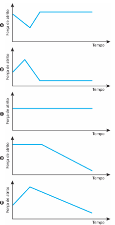
Resolver por eliminação
1. O enunciado garante movimento durante todo o trecho: trata-se de atrito cinético.
2. Use f=\mu N. A rugosidade é constante, logo \mu é constante.
3. No plano inclinado, N=mg\cos\theta. A força aplicada é paralela ao plano e não altera a normal.
4. Se \mu, m, g e \theta não mudam, o atrito não muda. Elimine todas as opções que fazem o atrito acompanhar a força do trabalhador.
⚠ Pegadinha de prova: Não confunda força aplicada com força de atrito cinético. O Enem adora essa associação intuitiva — e errada.
Resposta da versão didática: C.
Versão didática adaptada. Referência: ENEM 2025, 2º dia, aplicação regular, questão 103 no caderno indicado. Enunciado aqui adaptado e esquema redesenhado para uso didático.
Abrir prova oficial do Inep.
A tirinha ilustra um processo físico em que uma onda sonora, produzida pela Mônica, causa a quebra das taças de cristal. O fenômeno ondulatório que provoca a quebra das taças só é possível em razão de uma característica da voz produzida pela Mônica naquele momento, que, diferentemente do que sugere a tirinha, não está relacionada à sua intensidade.
Figura original — Enem 2025, caderno 5 amarelo, questão 105.
Esse fenômeno e a característica associada à voz da Mônica são, respectivamente,
Resolver por eliminação
1. O enunciado avisa que a explicação não está na intensidade. Não confunda gritar mais forte com acertar a frequência de vibração da taça.
2. O fenômeno é ressonância: uma excitação com frequência adequada pode produzir grande amplitude de vibração. Elimine A e E, que falam em reflexão, e C, que fala em interferência.
3. Restam B e D. A condição de ressonância depende da frequência da excitação em relação à frequência natural da taça, não do timbre da voz. Elimine D.
4. Sobra B. A energia transferida e o amortecimento também importam para ocorrer a quebra; a frequência é a característica pedida. Não há cálculo.
Atenção à armadilha: Frequência favorece a ressonância; intensidade suficiente fornece energia. A questão pede a condição que caracteriza o fenômeno, não uma garantia de que qualquer voz quebrará uma taça.
Gabarito oficial: B.
Aplicação regular · 2º dia · Ciências da Natureza. Enunciado e alternativas transcritos do caderno oficial, com notação matemática em Unicode. Comentários de resolução elaborados para este material. Prova oficial do Inep · Gabarito oficial do Inep
Uma amostra possui 2,00 mg de cobalto-60, cuja meia-vida é 5,3 anos. Depois de 26,5 anos de armazenamento, qual massa resta aproximadamente?
Resolver por eliminação
1. Primeiro, não faça fórmula: veja quantas meias-vidas cabem no tempo. 26,5 / 5,3 = 5.
2. Agora apenas divida por 2 cinco vezes: 2,00 → 1,00 → 0,50 → 0,25 → 0,125 → 0,0625 mg.
3. Compare com as alternativas: 0,0625 mg é praticamente 0,06 mg.
4. Elimine C: 0,40 mg aparece para quem divide 2,00 por 5, tratando decaimento exponencial como linear.
⚠ Pegadinha de prova: Quando o tempo é múltiplo exato da meia-vida, a conta vira uma sequência de metades. Nada de canhão para matar mosquito.
Resposta da versão didática: E.
Versão didática adaptada. Referência: ENEM 2025, 2º dia, aplicação regular, questão 110 no caderno indicado. Enunciado aqui adaptado e esquema redesenhado para uso didático.
Abrir prova oficial do Inep.
O aquecimento em fogões por indução utiliza bobinas para produzir um campo magnético variável. Essa bobina se localiza abaixo do vidro cerâmico sobre o qual a panela se apoia. O mecanismo aquece apenas a panela que se encontra na zona de cozimento, o que é uma das principais vantagens em relação ao uso do fogão a gás ou de resistência elétrica.
PEREIRA, A. B. et al. Fogões de indução: montagem e testes de um circuito disponível. Disponível em: https://publicacoes.fatecsertaozinho.edu.br. Acesso em: 21 maio 2025 (adaptado).
O uso do campo magnético variável tem a finalidade de
Resolver por eliminação
1. A palavra-chave é “variável”: a mudança do fluxo magnético induz corrente elétrica no material condutor da panela.
2. Apenas imantar a panela não descreve o mecanismo de aquecimento solicitado. Movimentar átomos de ferro também não descreve essa indução: elimine A e B.
3. O mecanismo principal não é radiação atravessando o vidro nem convecção no ar: descarte C e E.
4. D apresenta as duas etapas corretas: indução de corrente e dissipação de energia por efeito Joule. Sem contas. Compare com a questão de 2023 sobre o mesmo princípio.
Atenção à armadilha: Aquecimento da panela por indução não é o mesmo mecanismo de um fogão resistivo que aquece primeiro sua própria resistência.
Gabarito oficial: D.
Aplicação regular · 2º dia · Ciências da Natureza. Enunciado e alternativas transcritos do caderno oficial, com notação matemática em Unicode. Comentários de resolução elaborados para este material. Prova oficial do Inep · Gabarito oficial do Inep
A laje de um depósito de bebidas tem 50 m² de área útil de armazenamento e foi projetada para suportar pressões de até 10⁴ Pa. O gerente do estabelecimento pretende armazenar um produto cuja densidade é 1 250 kg/m³. Considere a aceleração da gravidade igual a 10 m/s².
A altura máxima, em metro, de empilhamento do produto que essa laje é capaz de suportar é
Resolver por eliminação
1. A pressão é o peso dividido pela área: p = mg/A. Como m = ρAh, a área cancela e p = ρgh. Os 50 m² não precisam entrar na conta final.
2. Uma coluna de 1 m desse produto exerce 1 250 × 10 = 12 500 Pa, acima do limite de 10 000 Pa. Logo, a altura deve ser menor que 1 m: elimine D e E.
3. A altura deve ser 10 000/12 500 de 1 m: isso é 0,8 m. Sobra C. A e B subutilizam a pressão admissível e não são a altura máxima.
4. A conta curta confirma: h = p/(ρg) = 10⁴/(1 250 × 10) = 0,80 m.
Atenção à armadilha: Usar a área duas vezes ou confundir massa com peso. Esta é a idealização do item do Enem, não um dimensionamento estrutural real.
Gabarito oficial: C.
Aplicação regular · 2º dia · Ciências da Natureza. Enunciado e alternativas transcritos do caderno oficial, com notação matemática em Unicode. Comentários de resolução elaborados para este material. Prova oficial do Inep · Gabarito oficial do Inep
Segundo o princípio da independência dos movimentos, de Galileu, sempre que a velocidade resultante de um corpo puder ser decomposta em duas ou mais componentes perpendiculares entre si, cada um desses movimentos poderá ser analisado separadamente como se os outros não existissem. Esse princípio é muito útil para a simplificação de alguns problemas reais, em três dimensões.
Considere um avião que, ao decolar, é instruído pela torre a atingir, em 6 minutos, uma posição de 20 km a Leste, 20 km a Norte e 1 km de altitude em relação ao ponto de decolagem, conforme a figura (fora de escala). No entanto, no instante da decolagem, começa a soprar um vento cujo vetor velocidade tem componentes 30 km/h para Leste, 20 km/h para Sul e 1 km/h de cima para baixo.
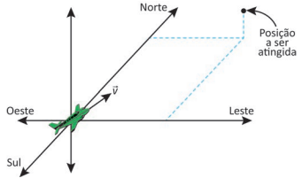
Figura original — Enem 2025, caderno 5 amarelo, questão 128.
Durante a ação do vento, a velocidade v⃗ que o piloto deve estabelecer em relação ao ar para que o avião chegue à posição esperada no tempo indicado tem as componentes
Resolver por eliminação
1. Converta uma única vez: 6 min = 0,1 h. A velocidade resultante em relação ao solo deve ser 200 km/h a Leste, 200 km/h a Norte e 10 km/h para cima.
2. O vento já ajuda para Leste: o piloto deve fornecer menos que 200 km/h nessa direção. A e B, com 230 km/h, aumentariam o erro. C aponta para Oeste e também está errada.
3. Restam D e E. O vento empurra para Sul, então o piloto precisa fornecer mais de 200 km/h para Norte, não menos. Elimine E: sobra D.
4. Confira por componentes: Leste = 200 − 30 = 170; Norte = 200 − (−20) = 220; vertical = 10 − (−1) = 11 km/h para cima.
Atenção à armadilha: Somar o vento à velocidade desejada, quando é preciso compensá-lo: v(avião/ar) = v(avião/solo) − v(ar/solo).
Gabarito oficial: D.
Aplicação regular · 2º dia · Ciências da Natureza. Enunciado e alternativas transcritos do caderno oficial, com notação matemática em Unicode. Comentários de resolução elaborados para este material. Prova oficial do Inep · Gabarito oficial do Inep
Enem 2025 · Questão 135 · Eletricidade e magnetismo
Eletrodinâmica — potência, corrente e fusível
Uma régua elétrica suporta no máximo 20 A em 110 V. Computador (250 W) e ar-condicionado portátil (1 100 W) ficam ligados permanentemente. Em seguida, são tentados, nessa ordem e um por vez: impressora (660 W), cafeteira (900 W), luminária (5 W) e secador (750 W). Quantas atividades são realizadas antes de o fusível abrir?
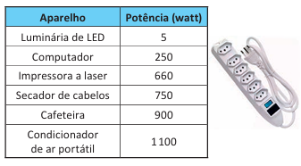
Resolver por eliminação
1. Transforme o limite de corrente em potência: P_{máx}=UI=110\times20=2200\,W.
2. Cargas permanentes: 250 + 1100 = 1350 W. Sobram 850 W.
3. Impressora: 660 W < 850 W. Primeira atividade passa.
4. Cafeteira: 900 W > 850 W. O limite é ultrapassado e o fusível abre.
5. Depois disso acabou a festa: luminária e secador nem chegam a ser testados. Logo, somente 1 atividade.
⚠ Pegadinha de prova: A ordem importa. A luminária caberia tranquilamente, mas o fusível já abriu antes.
Resposta da versão didática: D.
Versão didática adaptada. Referência: ENEM 2025, 2º dia, aplicação regular, questão 135 no caderno indicado. Enunciado aqui adaptado e esquema redesenhado para uso didático.
Abrir prova oficial do Inep.
Carros modernos possuem regiões projetadas para deformar durante uma colisão. Considerando carro, ocupantes e obstáculo como um sistema isolado, qual é a principal razão física para essa deformação aumentar a segurança?
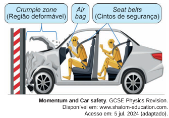
Resolver por eliminação
1. Sistema isolado: a quantidade de movimento total é conservada. Portanto, elimine C.
2. Uma zona de deformação não existe para ficar mais rígida; é justamente o contrário. Elimine D.
3. Airbag pode ser acionado por sensores, mas isso não explica a física da zona de deformação. Elimine A.
4. A deformação converte energia cinética em energia interna e aumenta o tempo de colisão, reduzindo forças sobre os ocupantes. B expressa a ideia central.
5. E mistura centro de massa com dissipação de energia e não descreve o mecanismo.
⚠ Pegadinha de prova: Conserve momento; dissipe energia cinética. Essa dupla resolve muita questão de colisão.
Resposta da versão didática: B.
Versão didática adaptada. Referência: ENEM 2024, 2º dia, aplicação regular, questão 91 no caderno indicado. Enunciado aqui adaptado e esquema redesenhado para uso didático.
Abrir prova oficial do Inep.
Uma roda está desbalanceada: o centro de massa aparece deslocado para o quadrante superior direito. Para trazê-lo de volta ao centro geométrico, em qual região deve ser adicionada uma pequena massa de chumbo?
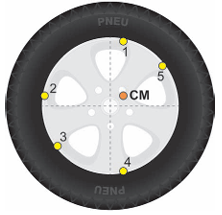
Resolver por eliminação
1. Adicionar massa desloca o centro de massa na direção da massa adicionada.
2. Se o centro de massa já está deslocado para cima e para a direita, colocar chumbo nesse mesmo lado piora o defeito. Elimine B e E.
3. Para compensar, procure o ponto aproximadamente diametralmente oposto: baixo e esquerda.
4. Isso corresponde a C.
⚠ Pegadinha de prova: Em balanceamento, pense em uma gangorra: para corrigir excesso de um lado, acrescente massa do outro.
Resposta da versão didática: C.
Versão didática adaptada. Referência: ENEM 2024, 2º dia, aplicação regular, questão 96 no caderno indicado. Enunciado aqui adaptado e esquema redesenhado para uso didático.
Abrir prova oficial do Inep.
A fala de um professor mede 60 dB a 1 m. O ruído de fundo pode chegar a 45 dB e a fala precisa ficar ao menos 5 dB acima dele para ser compreendida. A partir do gráfico de decaimento com a distância, a maior distância compatível fica mais próxima de qual valor?
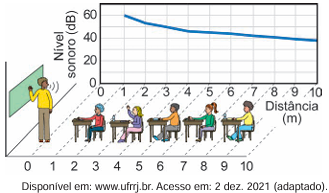
Resolver por eliminação
1. Primeiro calcule o nível mínimo necessário: 45 + 5 = 50 dB.
2. Saímos de 60 dB a 1 m e precisamos encontrar onde o nível cai para cerca de 50 dB.
3. Em campo livre, dobrar a distância reduz aproximadamente 6 dB. A 2 m teríamos perto de 54 dB; a 4 m, perto de 48 dB.
4. Logo o ponto de 50 dB está entre 2 e 4 m. Antes de qualquer cálculo fino, B, C, D e E já ficam improváveis. A opção mais próxima é 3,0 m.
⚠ Pegadinha de prova: Decibel é escala logarítmica. Não trate a queda de dB como relação linear com metros.
Resposta da versão didática: A.
Versão didática adaptada. Referência: ENEM 2024, 2º dia, aplicação regular, questão 101 no caderno indicado. Enunciado aqui adaptado e esquema redesenhado para uso didático.
Abrir prova oficial do Inep.
Para os circuitos de maratonas aquáticas realizadas em mares calmos e próximos à praia, é montado um sistema de boias que determinam o trajeto a ser seguido pelos nadadores. Uma das dificuldades desse tipo de circuito é compensar os efeitos da corrente marinha. O diagrama contém o circuito em que deve ser realizada uma volta no sentido anti-horário. As quatro boias estão numeradas de 1 a 4. Existe uma corrente marinha de velocidade v⃗c, cujo módulo é 30 metros por minuto, paralela à praia em toda a área do circuito. Nas arestas mais longas, o nadador precisará nadar na direção apontada pelos vetores v⃗n dos pontos 1 até 2 e de 3 até 4. Considere que a velocidade do nadador é de 50 metros por minuto, em relação à água, durante todo o circuito.
Figura original — Enem 2024, caderno 5 amarelo, questão 104.
Nessa situação, em quantos minutos o nadador completará a prova?
Resolver por eliminação
1. Leia o desenho: a volta tem duas arestas de 800 m e duas de 400 m. A corrente aponta para baixo. A velocidade de 50 m/min é relativa à água, não à margem.
2. Nas arestas de 800 m, parte da velocidade compensa os 30 m/min da corrente. O triângulo 3–4–5 dá a velocidade útil de 40 m/min. Esses dois trechos já exigem 1 600/40 = 40 min. A opção A deixaria apenas 2 min para os outros 800 m: impossível, pois nem a favor da corrente a velocidade supera 80 m/min.
3. No trecho 2 → 3, contra a corrente: 50 − 30 = 20 m/min, então 400/20 = 20 min. No trecho 4 → 1, a favor: 50 + 30 = 80 m/min, então 400/80 = 5 min.
4. Total: 40 + 20 + 5 = 65 min. B. C, D e E são descartadas pela soma dos tempos de cada trecho. Aqui a eliminação sozinha não basta; a conta é necessária.
Atenção à armadilha: Fazer a média simples entre 20 e 80 m/min: trechos de mesma distância são percorridos em tempos diferentes.
Gabarito oficial: B.
Aplicação regular · 2º dia · Ciências da Natureza. Enunciado e alternativas transcritos do caderno oficial, com notação matemática em Unicode. Comentários de resolução elaborados para este material. Prova oficial do Inep · Gabarito oficial do Inep
Uma ambulância em alta velocidade com a sirene ligada desloca-se em direção a um radar operado por uma pessoa. O radar emite ondas de rádio com frequência f₀ que são refletidas pela dianteira da ambulância, retornando para o detector com frequência fᵣ. A percepção do operador do radar, em relação ao som emitido pela sirene, é de que este se altera à medida que a ambulância se aproxima ou se afasta.
Durante a aproximação, como o operador percebe o som da sirene e qual é a relação entre as frequências fᵣ e f₀ medidas pelo radar?
Resolver por eliminação
1. Aproximação da fonte sonora aumenta a frequência percebida: o som fica mais agudo. Elimine A e E.
2. O radar recebe a onda refletida por um objeto que se aproxima. Há aumento da frequência de retorno, não diminuição: elimine B.
3. A reflexão em uma ambulância em movimento não preserva a frequência no referencial do radar. Elimine C.
4. Sobra D: som mais agudo e fᵣ > f₀. Não é preciso aplicar a fórmula do efeito Doppler para determinar apenas o sentido da mudança.
Atenção à armadilha: Agudo/grave descreve frequência; forte/fraco descreve intensidade. Não são sinônimos.
Gabarito oficial: D.
Aplicação regular · 2º dia · Ciências da Natureza. Enunciado e alternativas transcritos do caderno oficial, com notação matemática em Unicode. Comentários de resolução elaborados para este material. Prova oficial do Inep · Gabarito oficial do Inep
Aquecedores solares são equipamentos utilizados para o aquecimento de água pelo calor do Sol. São compostos por coletores solares, nos quais ocorre o aquecimento da água, e por um reservatório térmico, em que é armazenada a água quente para ser utilizada posteriormente. A figura ilustra esquematicamente como funciona esse equipamento.
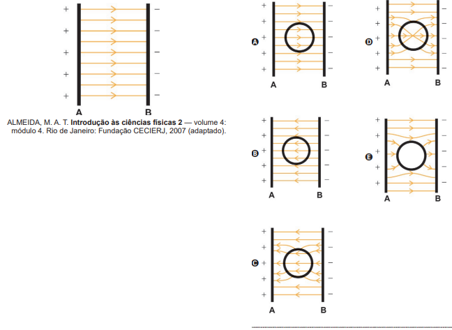
Figura original — Enem 2024, caderno 5 amarelo, questão 126.
5 dicas de instalação de aquecedor solar. Disponível em: https://instaline.com.br. Acesso em: 3 nov. 2023 (adaptado).
O processo pelo qual ocorre transferência de calor dos coletores solares para o reservatório térmico é a
Resolver por eliminação
1. A pergunta delimita o trecho: dos coletores ao reservatório. Não pergunta como a energia chega do Sol aos coletores. Portanto, não marque D por associação automática com “solar”.
2. O desenho mostra a circulação da água: a água aquecida sobe para o reservatório, e a mais fria retorna. Isso é transporte de energia pelo movimento de um fluido.
3. Condução não descreve esse transporte macroscópico de água: descarte C. Difusão e absorção tampouco nomeiam a circulação mostrada: elimine A e B.
4. Sobra E, convecção. O mecanismo mostrado é a circulação natural por diferença de densidade, conhecida como termossifão.
Atenção à armadilha: Escolher irradiação porque aparece a palavra “Sol”, sem observar qual etapa da transferência de calor foi perguntada.
Gabarito oficial: E.
Aplicação regular · 2º dia · Ciências da Natureza. Enunciado e alternativas transcritos do caderno oficial, com notação matemática em Unicode. Comentários de resolução elaborados para este material. Prova oficial do Inep · Gabarito oficial do Inep
Enem 2024 · Questão 127 · Eletricidade e magnetismo
Eletrostática — blindagem e gaiola de Faraday
Um cilindro metálico oco é colocado entre duas regiões de potenciais elétricos diferentes. Qual desenho de linhas de campo é fisicamente compatível com o equilíbrio eletrostático?
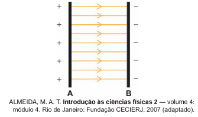
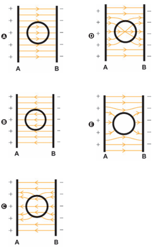
Resolver por eliminação
1. Condutor em equilíbrio eletrostático: o campo no interior do material condutor é zero.
2. Numa cavidade vazia protegida pelo condutor, o campo também fica nulo nas condições da questão.
3. Elimine A e B porque atravessam o condutor; elimine D porque linhas de campo nunca se cruzam.
4. Elimine C porque o sentido convencional do campo vai do positivo para o negativo.
5. Sobra E: linhas externas se deformam ao redor do metal e não atravessam a cavidade.
⚠ Pegadinha de prova: Três filtros rápidos: não cruza, não atravessa o interior do condutor, vai do + para o −.
Resposta da versão didática: E.
Versão didática adaptada. Referência: ENEM 2024, 2º dia, aplicação regular, questão 127 no caderno indicado. Enunciado aqui adaptado e esquema redesenhado para uso didático.
Abrir prova oficial do Inep.
Em aeroportos, por razões de segurança, os passageiros devem ter suas bagagens de mão examinadas antes do embarque, passando-as em esteiras para sua inspeção por aparelhos de raios X. Nessas inspeções, os passageiros são orientados a retirar seus computadores portáteis (notebooks ou laptops) de malas, mochilas ou bolsas para passá-los isoladamente pela esteira.
Que explicação física justifica esse procedimento?
Resolver por eliminação
1. O procedimento serve para enxergar objetos sobrepostos. Procure uma alternativa sobre transmissão ou atenuação dos raios X, não sobre um dano ao aparelho.
2. A é falsa: os raios X interagem com a matéria, e essa interação permite o contraste da imagem.
3. B e C atribuem a recomendação à desmagnetização ou ao aquecimento, que não explicam a dificuldade de visualizar objetos escondidos. E cita ionização e difração, mas isso também não explica separar o computador da bagagem.
4. Sobra D, conforme o gabarito oficial. Componentes densos atenuam fortemente o feixe e podem ocultar objetos sobrepostos. A redação “não atravessam”, da prova, expressa essa limitação de visualização; fisicamente, a transmissão depende do material, da espessura e da energia dos fótons.
Atenção à armadilha: Uma alternativa pode empregar palavras científicas verdadeiras em outro contexto e, ainda assim, não explicar o procedimento perguntado.
Gabarito oficial: D.
Aplicação regular · 2º dia · Ciências da Natureza. Enunciado e alternativas transcritos do caderno oficial, com notação matemática em Unicode. Comentários de resolução elaborados para este material. Prova oficial do Inep · Gabarito oficial do Inep
Em uma indústria alimentícia, para produção de doce de leite, utiliza-se um tacho de parede oca com uma entrada para vapor de água a 120 °C e uma saída para água líquida em equilíbrio com o vapor a 100 °C. Ao passar pela parte oca do tacho, o vapor de água transforma-se em líquido, liberando energia. A parede transfere essa energia para o interior do tacho, resultando na evaporação de água e consequente concentração do produto.
No processo de concentração do produto, é utilizada energia proveniente
Resolver por eliminação
1. Procure quem fornece energia: é o vapor que passa pela parede oca, não a água que evapora no doce.
2. O vapor esfria de 120 °C para 100 °C: há liberação de calor sensível. Elimine A e B, que dizem “somente”, e E, que omite essa contribuição.
3. Depois, vapor vira líquido: isso é condensação, que também libera energia. Entre C e D, somente D descreve as duas contribuições da fonte.
4. Não é necessário calcular: os estados inicial e final já resolvem a questão.
Atenção à armadilha: Confundir a vaporização da água do doce, que recebe energia, com a condensação do vapor na parede, que fornece energia.
Gabarito oficial: D.
Aplicação regular · 2º dia · Ciências da Natureza. Enunciado e alternativas transcritos do caderno oficial, com notação matemática em Unicode. Comentários de resolução elaborados para este material. Prova oficial do Inep · Gabarito oficial do Inep
O fogão por indução funciona a partir do surgimento de uma corrente elétrica induzida no fundo da panela, com consequente transformação de energia elétrica em calor por efeito Joule. A principal vantagem desses fogões é a eficiência energética, que é substancialmente maior que a dos fogões convencionais.
A corrente elétrica mencionada é induzida por
Resolver por eliminação
1. O enunciado pergunta o que induz a corrente, e não o que transfere calor depois de ela existir.
2. Condução térmica não explica o surgimento da corrente: elimine B. Radiação e ressonância também não são o mecanismo indicado: elimine A e E.
3. A variação do fluxo magnético através de um circuito induz força eletromotriz. A bobina do fogão produz esse campo magnético variável: D.
4. C pode parecer tentadora porque há um campo elétrico induzido. Mas a causa empregada pelo fogão, descrita pela lei de Faraday, é a variação do fluxo magnético. Sem contas.
Atenção à armadilha: Indução e aquecimento são etapas diferentes: campo magnético variável → corrente induzida → efeito Joule.
Gabarito oficial: D.
Aplicação regular · 2º dia · Ciências da Natureza. Enunciado e alternativas transcritos do caderno oficial, com notação matemática em Unicode. Comentários de resolução elaborados para este material. Prova oficial do Inep · Gabarito oficial do Inep
Dois aparelhos de musculação levantam cargas com velocidade constante. O primeiro usa apenas polias fixas; o segundo possui uma polia móvel sustentada por dois trechos de corda. Para que o usuário faça a mesma força nos dois aparelhos, qual deve ser a razão entre as massas M₂/M₁?
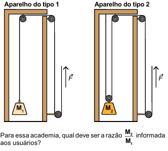
Resolver por eliminação
1. Polia fixa só muda direção: no aparelho 1, F = M₁g.
2. Na polia móvel, dois trechos de corda sustentam a carga: 2F = M₂g.
3. Se a força do usuário é a mesma: M₁g = M₂g/2.
4. Cancele g: M₂ = 2M₁, portanto M₂/M₁ = 2.
5. Elimine B: é o erro de inverter a razão pedida.
⚠ Pegadinha de prova: Polia móvel dá vantagem mecânica 2: metade da força, dobro de corda puxada.
Resposta da versão didática: D.
Versão didática adaptada. Referência: ENEM 2023, 2º dia, aplicação regular, questão 102 no caderno indicado. Enunciado aqui adaptado e esquema redesenhado para uso didático.
Abrir prova oficial do Inep.
Uma esfera é lançada verticalmente para cima. No instante exato em que atinge a altura máxima, como estão sua velocidade e sua aceleração, desprezando a resistência do ar?
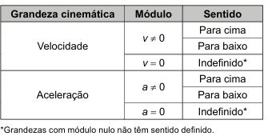
Resolver por eliminação
1. No ponto mais alto ocorre a troca do sentido do movimento: a velocidade instantânea passa por zero. Elimine B, D e E.
2. A gravidade não desliga no topo. A aceleração continua sendo g, para baixo.
3. Entre A e C, apenas C aponta a aceleração para baixo.
⚠ Pegadinha de prova: Velocidade zero não significa aceleração zero. Essa é uma das pegadinhas mais clássicas da Física.
Resposta da versão didática: C.
Versão didática adaptada. Referência: ENEM 2023, 2º dia, aplicação regular, questão 106 no caderno indicado. Enunciado aqui adaptado e esquema redesenhado para uso didático.
Abrir prova oficial do Inep.
O petróleo é uma matéria-prima muito valiosa e métodos geofísicos são úteis na sua prospecção. É possível identificar a composição de materiais estratificados medindo-se a velocidade de propagação do som (onda mecânica) através deles. Considere que uma camada de 450 m de um líquido se encontra presa no subsolo entre duas camadas rochosas, conforme o esquema. Um pulso acústico (que gera uma vibração mecânica) é emitido a partir da superfície do solo, onde são posteriormente recebidas duas vibrações refletidas (ecos). A primeira corresponde à reflexão do pulso na interface superior do líquido com a camada rochosa. A segunda vibração deve-se à reflexão do pulso na interface inferior. O tempo entre a emissão do pulso e a chegada do primeiro eco é de 0,5 s. O segundo eco chega 1,1 s após a emissão do pulso.
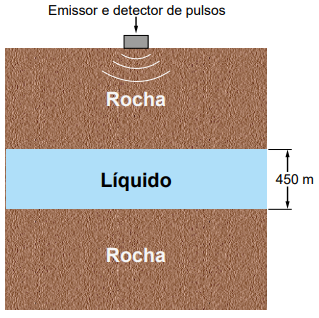
Figura original — Enem 2023, caderno 5 amarelo, questão 114.
A velocidade do som na camada líquida, em metro por segundo, é
Resolver por eliminação
1. Os dois ecos fazem o mesmo percurso na rocha superior. Subtrair os tempos cancela esse trecho desconhecido.
2. O segundo eco percorre a camada líquida na ida e na volta: a distância adicional é 2 × 450 = 900 m.
3. O tempo adicional é 1,1 − 0,5 = 0,6 s. Em menos de um segundo, o pulso percorre 900 m; portanto, a velocidade deve superar 900 m/s. Elimine A, B e C.
4. Agora a conta curta decide entre D e E: v = 900/0,6 = 1 500 m/s. Alternativa D.
Atenção à armadilha: Usar o tempo total de 1,1 s ou esquecer que o eco atravessa o líquido duas vezes.
Gabarito oficial: D.
Aplicação regular · 2º dia · Ciências da Natureza. Enunciado e alternativas transcritos do caderno oficial, com notação matemática em Unicode. Comentários de resolução elaborados para este material. Prova oficial do Inep · Gabarito oficial do Inep
Para que um sinal emitido por um aparelho eletrônico possa interferir diretamente na comunicação por rádio entre uma aeronave e a torre de controle, qual característica é essencialmente relevante?
Resolver por eliminação
1. Rádio é um sistema sintonizado por frequência. Essa palavra já aponta o caminho.
2. Audível? Não: ondas de rádio são eletromagnéticas; o som aparece somente depois da demodulação. Elimine A.
3. Potência e intensidade dizem quão forte é o sinal, mas um sinal fora da faixa de sintonia não é o canal desejado. Elimine B e D.
4. No mesmo meio, ondas eletromagnéticas propagam-se praticamente com a mesma velocidade. Elimine E.
5. Sobra C.
⚠ Pegadinha de prova: Em telecomunicações, pense primeiro em frequência/canal, depois em potência.
Resposta da versão didática: C.
Versão didática adaptada. Referência: ENEM 2023, 2º dia, aplicação regular, questão 115 no caderno indicado. Enunciado aqui adaptado e esquema redesenhado para uso didático.
Abrir prova oficial do Inep.
A utilização de tecnologia nuclear é um tema bastante controverso, por causa do risco de acidentes graves, como aqueles ocorridos em Chernobyl (1986), em Goiânia (1987) e em Fukushima (2011). Apesar de muitas desvantagens, como a geração de resíduos tóxicos, a descontaminação ambiental dispendiosa em caso de acidentes e a utilização em armas nucleares, a geração de energia nuclear apresenta vantagens em comparação a outras fontes de energia.
A geração dessa energia tem como característica:
Resolver por eliminação
1. A pergunta procura uma vantagem do processo nuclear. O próprio texto destaca o problema dos resíduos: descarte A.
2. Desmatamento e chuva ácida não são vantagens: elimine B e C. A emissão de gases tóxicos tampouco caracteriza a vantagem procurada: elimine D.
3. Na usina nuclear, a fissão libera calor sem queimar carvão, petróleo ou gás natural. Sobra E.
4. Não há cálculo. Observe a transformação de energia e o combustível que efetivamente participa da produção de calor.
Atenção à armadilha: “Sem consumir combustíveis fósseis na geração de calor” não significa ausência de resíduos, riscos ou impactos ao longo de todo o ciclo de vida.
Gabarito oficial: E.
Aplicação regular · 2º dia · Ciências da Natureza. Enunciado e alternativas transcritos do caderno oficial, com notação matemática em Unicode. Comentários de resolução elaborados para este material. Prova oficial do Inep · Gabarito oficial do Inep
Uma rodovia tem 480 km e 10 pedágios. Um carro viaja a 100 km/h e para 3 min em cada pedágio; um caminhão viaja a 80 km/h, mas usa cobrança automática e não para. Quantos minutos a menos o carro leva no total?
Resolver por eliminação
1. Tempo do carro na estrada: 480/100=4,8\,h=288\,min.
2. Pedágios do carro: 10 × 3 = 30 min. Total = 318 min.
3. Tempo do caminhão: 480/80=6\,h=360\,min. Sem parada.
4. Diferença: 360 − 318 = 42 min.
5. Elimine C (72 min): é o resultado de esquecer que quem tem cobrança automática é o caminhão.
⚠ Pegadinha de prova: Leia quem possui o benefício. O Enem costuma esconder a pegadinha numa frase, não numa fórmula.
Resposta da versão didática: B.
Versão didática adaptada. Referência: ENEM 2023, 2º dia, aplicação regular, questão 135 no caderno indicado. Enunciado aqui adaptado e esquema redesenhado para uso didático.
Abrir prova oficial do Inep.